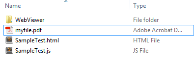

Tutorials
Getting Started with using PDFNetJS
PDFNetJS provides the power of PDFNet rendering and processing in the browser. This tutorial will demonstrate how to set up a basic PDFNetJS project that outputs the number of pages in a PDF document. PDFNetJS does not require any conversion of documents but can only view PDF documents. Without a license key a demo stamp is applied. PDFNetJS is currently not supported on mobile devices.
Step 0: Starting from Scratch
- Download PDFNetJS full, unzip the file, and move the folder "WebViewer" to a desired location within a web server folder. If you do not have a server available, you can quickly set one up with XAMPP or WAMP
- Create an empty HTML file and place it in the same location as the WebViewer folder (file will be referred to as SampleTest.html).
- Create an empty JavaScript file and place it in the same location as the WebViewer folder (file will be referred to as SampleTest.js).
Note: This tutorial uses ES6 JavaScript promises and generators. For more information on promises and generators, refer to these online explanations:
Step 1: Setting up your HTML document
Open up SampleTest.html with a text editor and copy/paste the following code into the HTML document.
<!DOCTYPE html>
<html>
<head>
<script src="WebViewer/jquery-3.2.1.min.js"></script>
<script src="WebViewer/lib/html5/CoreControls.js"></script>
<script src="WebViewer/lib/html5/external/FileSaver.min.js"></script>
<script src="WebViewer/lib/html5/pdf/PDFNet.js"></script>
<script src="WebViewer/samples/PDFNet/Setup.js"></script>
<script src="SampleTest.js"></script>
</head>
<body onload="runSampleTest();">
</body>
</html>
Here we include PDFNetJS, the necessary libraries it depends on, and our crrently empty SampleTest.js custom file. Adding these files in a different order may result in errors. To initialize our script, the body executes function runSampleTest(), which we will soon add to SampleTest.js.
Step 2: Setting up your JavaScript Document
Open up SampleTest.js with a text editor and copy/paste the following code into the JavaScript document:
var runSampleTest;
(function(exports) {
"use strict";
// the path to where the PDF worker files are
CoreControls.setWorkerPath('WebViewer/lib/html5');
runSampleTest = function() {
function* main() {
// To be filled
}
PDFNet.runGeneratorWithCleanup(main());
// Alt: PDFNet.runGeneratorWithoutCleanup(main()); // does not deallocate anything after finishing.
}
})(window);
In this script, we have our runSampleTest() function wrapped inside an immediately invoked function expression. Inside the function we have a generator continueIteration() and an empty main() function that we will later fill out.
function* main() will be where we add our custom code. In order to initialize main() we insert it function PDFNet.runGeneratorWithCleanup(main());
Step 3: Setting up your Main Function
Copy/paste the following code and use it to replace our currently empty main() function.
function* main() {
try {
var doc = yield PDFNet.PDFDoc.create(); // creates an empty pdf document
doc.initSecurityHandler(); // initializes security handler
doc.lock(); // Locks all PNaCl operations on the document
// insert user code after this point
var pgnum = yield doc.getPageCount();
alert("Test Complete! Your file has " + pgnum + " pages");
} catch(err) {
console.log(err.stack)
}
}
Here we set up the basic requirements for a PDFNetJS script.
yield PDFNet.PDFDoc.create() - Creates an empty placeholder PDF document. All PDFNetJS functions return a promise, which means that for functions which return a value or object, we need to add a yield statement in front to guarantee that the object is resolved by the time we use it. Without adding a yield statement, PDFNet.PDFDoc.create() will simply return a promise rather than the document we want.
To open an existing PDF document, call yield PDFNet.PDFDoc.createFromURL("path/to/pdfdoc.pdf"); instead.
doc.initSecurityHander() - Initializes security handler which is used to check for and handle password-locked PDFs.
doc.lock() - Locks all PNaCl operations on the document in order to avoid editing conflicts from other processes. More information is available in the advanced tutorial.
Running Our Own Code:
Now that we have properly set up our document, we can call read/write operations on it.
yield doc.getPageCount() - Returns a promise that contains the number of pages in the PDF document. Remember to call yield to resolve the promise.
Testing
To test if everything is working correctly, we have an alert message at the end of our try block that will output the number of pages in our PDF doc.alert("Test Complete! Your file has " + pgnum + " pages");
Since we have not added any pages to our pdf doc, the number of pages will be 0. Try swapping out create() with createFromURL("path/to/pdfdoc.pdf") to test the getPageCount() function on an existing PDF document.
var doc = yield PDFNet.PDFDoc.createFromURL("myfile.pdf");

Run SampleTest.html on a server. The "Test Complete!" alert box should pop up after a few moments.
Converting Generator Code (Important for IE usage):
This tutorial and all other PDFNetJS tutorials use ES6 generator functions in JavaScript which are currently supported in Chrome, Firefox, and Opera, but may be unsupported in other browsers. If you are working with a browser without ES6 support, you can take a look at online ES6-to-ES5 transformers such as Facebook's regenerator.
For an example of how to switch between ES6 and ES5 compiled JavaScript code, see the HTML page of one of our samples (eg. AddImageTest.html).
PDFNetJS Samples
The best way to get started with writing your own PDFNetJS code is to run the PDFNetJS samples. You can find working samples and their source code on the PDFNetJS samples page.Useful links:
Questions? Try searching or asking in the WebViewer forum.